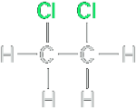
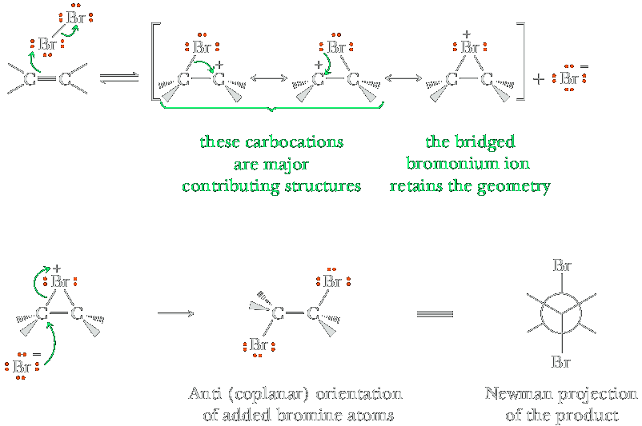
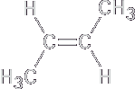
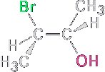
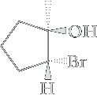
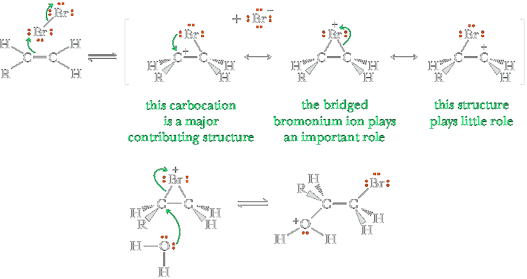

Addition of Bromine and Chlorine
Chlorine, Cl2, and bromine, Br2, react with alkenes at room temperature by adding halogen atoms to the two carbon atoms of the double bond with formation of two new carbon-halogen bonds. Fluorine, F2, adds to alkenes, but, because its reactions are very fast and difficult to control, this reaction is not a useful laboratory procedure. Iodine, I2, also adds, but the reaction is not preparatively useful. Halogenation with bromine or chlorine is generally carried out either with the pure reagents or by mixing them in an inert solvent such as CCl4, CHCl3 or CH2Cl2.
 | + | Cl2 | ⟶ |  (ethylene dichloride) |
The followins is a bromination leading to the formation of a racemic mixture of enantiomers of trans diastereomer 1,2-Dibromocyclohexane. These reactions proceed with anti (from the opposite side or face) addition of halogen atoms; that is, they occur with anti stereoselectivity.
An explanation for the observed stereochemistry of addition was suggested in 1937 by George Kimball and Irving Roberts, who proposed that the reaction intermediate is not a carbocation but is instead a bromonium ion, R2Br+, formed by electrophilic addition of Br+ to the alkene. (Similarly, a chloronium ion contains a positively charged, divalent chlorine, R2Cl+.) The bromonium ion is formed in a single step by interaction of the alkene with Br2 and simultaneous loss of Br2.
 Cyclohexene | + | Br2 | ⟶ CH2Cl2 |
-1,2-Dibromocyclohexane.png) (1R,2R)-1,2-dibromocyclohexane |
+ | -1,2-Dibromocyclohexane.png) (1S,2S)-1,2-dibromocyclohexane |
| (a racemic mixture) | ||||||
At first glance, the two trans enantiomers may appear to be the same structure. However, there is no plane of symmetry or center of symmetry so they are both chiral. You should make molecular models of both enantiomers and convince yourself that they are indeed nonsuperposable mirror images, and not just the same mol ecule viewed from a different perspective.
Mechanism: Anti Stereoselectivity and Bridged Halonium Ion Intermediates
Step 1. Reaction is initiated by interaction of the π electrons of the alkene with bromine (or chlorine as the case may be) that acts likes an electrophile to form an intermediate in which bromine bears a positive charge. A bromine atom bearing a positive charge is called a bromonium ion (ione bromonio), and the cyclic structure of which it is a part is called a bridged bromonium ion. Although a bridged bromonium ion may look odd because it has two bonds to bromine, it is nevertheless an acceptable Lewis structure. Calculation of formal charge places a positive charge on bromine. This intermediate is a hybrid of three resonance-contributing structures. Because of the planarity of the atoms forming the π bond, the bridged bromonium ion can form with equal probability on the top or bottom face of the alkene. In this step, the Br2 or Cl2 acts as an electrophile because the halogen-halogen bond is weak, and reaction leads to the departure of the stable X− anion.
Step 2. Attack of bromide ion (a nucleophile) on carbon from the side opposite the bromonium ion (an electrophile) opens the three-membered ring to give the anti product. The bromines are not only anti but also in the same plane (coplanar). Thus, we call this an anti-coplanar attack. Attack by Br– can occur at either carbon of the bromonium ion.
Addition of HOCl and HOBr
Treating an alkene with Br2 or Cl2 in the presence of water results in addition of OH and Br, or OH and Cl, to the carbon-carbon double bond to give a halohydrin: A compound containing a halogen atom and a hydroxyl group on adjacent carbons; those containing Br and OH are bromohydrins, and those containing Cl and OH are chlorohydrins.
| trans-2-Buthene (An alkene) | + | Br2 ⟶ H2O |  3-Bromo-2-butanol" A halohydrin (bromohydrin) | + | HBr |
Addition of HOCl and HOBr is regioselective (halogen adds to the less substituted carbon atom) and anti stereoselective. Both the regioselectivity and anti stereoselectivity are illustrated by the addition of HOBr to 1-methylcyclopentene. Bromine and the hydroxyl group add anti to each other with Br bonding to the less substituted carbon and OH bonding to the more substituted carbon. Dimethyl sulfoxide (DMSO) is used as a cosolvent with water to assist the solubility of the alkene.
 1-Methylcyclopentene |
Br2/H2O ⟶ DMSO | + |  (1R,2R)-2-Bromo-1-methylcyclopentanol | |
| Racemic mixture |
To account for the regioselectivity and anti stereoselectivity of halohydrin reactions, chemists propose a three-step mechanism.
Mechanism Halohydrin Formation and Its Anti Stereoselectivity
Step 1: Make a new bond between a nucleophile (π bond) and an electrophile. Reaction of the π electrons of the alkene with bromine (an electrophile) gives a bridged bromonium ion intermediate. This intermediate has some of the character of a carbocation (to account for the regioselectivity) and some of the character of a halonium ion (to account for the anti stereoselectivity). The secondary carbocation makes a substantial contribution to the structure of the resonance hybrid; the primary carbocation is higher in energy and makes little contribution.
Step 2: Make a new bond between a nucleophile and an electrophile. Attack of H2O (a nucleophile) on the more substituted carbon of the bridged bromonium ion (an electrophile) opens the three-membered ring.